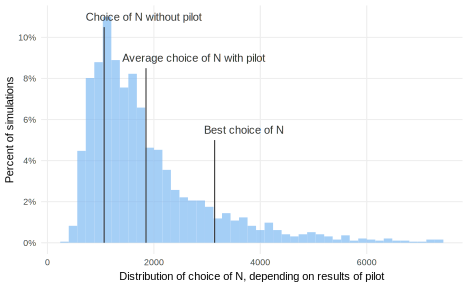

Piloting
Designing a research study always entails relying on a set of beliefs, what we’ve referred to as the set of possible models in M. Choices like how many subjects to sample, which covariates to measure, or which treatments to allocate all depend on beliefs about treatment effects, the correlations of the covariates with the outcome, and the variance of the outcome.
We may have reasonably educated guesses about these parameters from past studies or theory. Our understanding of the nodes and edges in the causal graph of M, expected effect sizes, the distribution of outcomes, feasible randomization schemes, and many other features are directly selected from past research or chosen based on a literature review of past studies.
Even so, we remain uncertain about these values. One reason for the uncertainty is that our research context and inquiries often differ subtly from previous work. Even when replicating an existing study as closely as possible, difficult-to-intuit features of the research setting may have serious consequences for the design. Moreover, our uncertainty about a design parameter is often the very reason for conducting a study. We run experiments because we are uncertain about the average treatment effect. Frustratingly, we always have to design under model uncertainty.
The main goal of pilot studies is to reduce this uncertainty. We would like use learn which models in M are more likely, so that the main study can be designed under beliefs that are closer to the truth. Pilots take many forms: focus groups, small-scale tests of measurement tools, even miniature versions of the main study on a smaller scale. We want to learn things like the distribution of outcomes, how covariates and outcomes might be correlated, or how feasible the assignment, sampling, and measurement strategies are.
Almost by definition, pilot studies are inferentially weaker than main studies. We turn to them in response to constraints on our time, money, and capacity. If we were not constrained, we would run a first full-size study, learn what is wrong with our design, then run a corrected full-size study. Since running multiple full studies is too expensive or otherwise unfeasible, we run either smaller mini-studies or test out only a subset of the elements of our planned design. Accordingly, the diagnosands of a pilot design will not measure up to those of the main design. Pilots have much lower statistical power and may suffer from higher measurement error and less generalizability. Accordingly, the goal of pilot studies should not be to obtain a preliminary answer to the main inquiry, but instead to learn the information that will make the main study a success.
Like main studies, pilot studies can be declared and diagnosed – but importantly, the diagnosands for main and pilot studies need not be the same. Statistical power for an average treatment effect may be an essential diagnosand for the main study, but owing to their small size, power for pilot studies will typically be abysmal. Pilot studies should be diagnosed with respect to the decisions they imply for the main study.
Figure @ref(fig:figure-21-3) shows the relationship between effect size and the sample size required to achieve 80% statistical power for a two-arm trial using simple random assignment. Uncertainty about the true effect size has enormous design consequences. If the effect size is 0.17, we need about 1,100 subjects to achieve 80% power. If it’s 0.1, we need 3200.

Suppose we have prior beliefs about the effect size that can be summarized as a normal distribution centered at 0.3 with a standard deviation of 0.1, as in the bottom panel of Figure @ref(fig:figure-21-2). We could choose a design that corresponds to this best guess, the average of our prior belief distribution. If the true effect size is 0.3, then a study with 350 subjects will have 80% power.
However, redesigning the study to optimize for the “best guess” is risky because the true effect could be much smaller than 0.3. Suppose we adopt the redesign heuristic of powering the study for an effect size at the 10th percentile of our prior belief distribution, which works out here to be an effect size of 0.17. Following this rule, we would select a design with 1100 subjects.
Now suppose the true effect size is, in actuality, only 0.1, so we would need to sample 3200 subjects for 80% power. The power of our chosen 1100-subject design is a mere 38%. Here we see the consequences of having incorrect prior beliefs: our ex-ante guess of the effect size was too optimistic. Even taking what we thought of as a conservative choice – the 10th percentile redesign heuristic – we ended up with too small a study.
A pilot study can help researchers update their priors about important design parameters. If we do a small scale pilot with 100 subjects, we’ll get a noisy but unbiased estimate of the true effect size. We can update prior beliefs by taking a precision weighted average of our priors and the estimate from the pilot, where the weights are the inverse of the variance of each guess. Our posterior beliefs will be closer to the truth, and our posterior uncertainty will be smaller. If we then follow the heuristic of powering the 10th percentile of our (now posterior) beliefs about effect size, we will have come closer to correctly powering our study. Figure @ref(fig:figure-21-4) shows how large the studies would be, depending on how the pilot study came out if we were to follow the 10th percentile decision rule. On average, the pilot leads us to design the main study with 1800 subjects, sometimes more and sometimes less.
This exercise reveals that a pilot study can be quite valuable. Without a pilot study, we would chose to sample 1100 subjects, but since the true effect size is only 0.1 (not our best guess of 0.3), the experiment would be underpowered. The pilot study helps us correct our diffuse and incorrect prior beliefs. However, since the pilot is small, we don’t update our priors all the way to the truth. We still end up with a main study that is on average too small (1800), with a corresponding power of 56%. That said, a 56% chance of finding a statistically significant result is better than a 38% chance.

In summary, pilots are most useful when we are uncertain – or outright wrong – about important design parameters. This uncertainty can often be shrunk by quite a bit without running pilot studies by meta-analyzing past empirical studies. Some things are hard to learn by reading others’ work; pilot studies are especially useful tools for learning about those things.